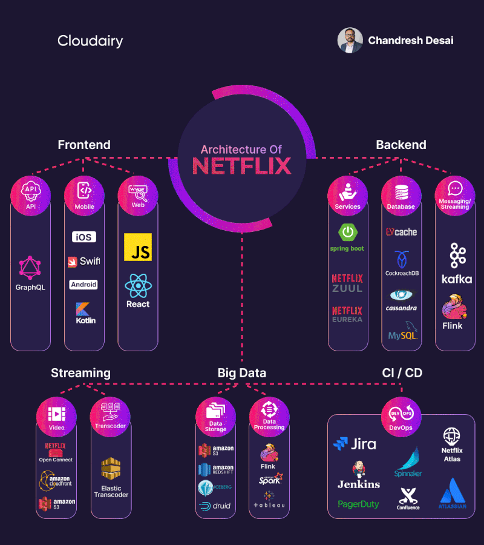

Arquitectura de Netflix
Distribución de Carga y Gestión de Infraestructura
Redes y Comunicaciones
Una mirada profunda al sistema de streaming más grande del mundo
Netflix en Números
- üé¨ Más de 230 millones de suscriptores globales
- üåç Disponible en más de 190 pa√≠ses
- üìä Más de 15,000 t√≠tulos en catálogo
- üíæ Genera petabytes de datos diariamente
- üöÄ Maneja millones de requests por segundo
Architectures

Arquitectura General
Frontend
iOS
Android
Web
Smart TV
Backend
API Gateway
Microservicios
Base de Datos
Cache
Streaming
CDN
Encoding
Open Connect
CI/CD
Jenkins
Spinnaker
Atlas
Distribución de Carga
Estrategias de Load Balancing
- Zuul Gateway: Proxy y Load Balancer a nivel de aplicación
- Eureka: Service Discovery para microservicios
- Ribbon: Client-side load balancing
- Hystrix: Circuit breaker para tolerancia a fallos
- Auto Scaling: Escalamiento automático basado en métricas
Gestión de Infraestructura
Netflix en AWS
- Multi-Region: Despliegue en múltiples regiones AWS
- Auto Scaling Groups: Escalamiento automático de instancias
- Elastic Load Balancers: Distribución de tráfico
- CloudFormation: Infraestructura como código
- Chaos Engineering: Resiliencia mediante Chaos Monkey
Netflix Open Connect
Red de Distribución de Contenido
Netflix ha creado su propia CDN llamada Open Connect para optimizar la entrega de contenido
- Servidores Locales: Equipos en ISPs para reducir latencia
- Cache Inteligente: Predicción de contenido popular
- Adaptive Streaming: Calidad dinámica según ancho de banda
- Global Coverage: Miles de servidores mundialmente
Arquitectura de Microservicios
Escalabilidad y Mantenibilidad
- 700+ Microservicios: Separación de responsabilidades
- Spring Boot: Framework para desarrollo ágil
- GraphQL Federation: API unificada
- Event-Driven: Comunicación asíncrona con Kafka
- Database per Service: Independencia de datos
Monitoreo y Observabilidad
Atlas, Spectator y más
- Atlas: Sistema de métricas en tiempo real
- Spectator: Librerías de instrumentación
- Distributed Tracing: Seguimiento de requests
- Alerting: Notificaciones proactivas
- Dashboards: Visualización de métricas
Casos de Uso Reales
Problemas y Soluciones
- Black Friday: Manejo de picos de tráfico extremo
- Lanzamientos Globales: Distribución simultánea mundial
- Outages de AWS: Recuperación automática
- A/B Testing: Experimentación a gran escala
- Recomendaciones: ML en tiempo real
Conclusiones Clave
- üèóÔ∏è Arquitectura resiliente: Dise√±o para fallos
- ⚡ Escalabilidad horizontal: Crecimiento elástico
- üîÑ DevOps cultura: Deploy continuo y automatizaci√≥n
- üìä Data-driven: Decisiones basadas en m√©tricas
- üåç Global thinking: Infraestructura mundial
"The best way to avoid failure is to fail constantly" - Netflix Engineering